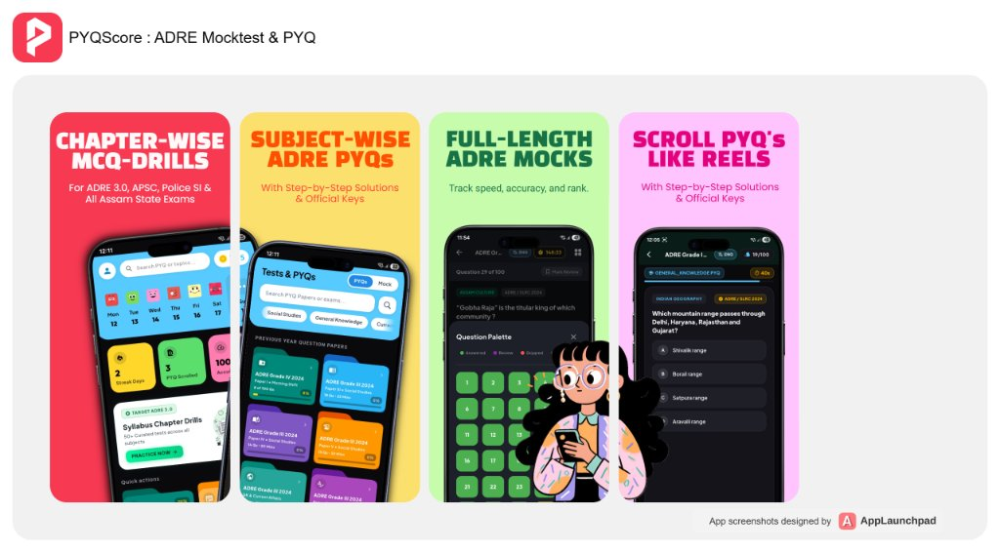

The Assam Direct Recruitment Examination (ADRE) is one of the most competitive state-level recruitment drives in Assam, with lakhs of aspirants competing for Grade 3 and Grade 4 posts. While mastering the syllabus is the foundation, securing a top merit rank requires disciplined practice under real exam conditions.
The difference between qualifying and missing the cutoff often comes down to speed, accuracy, and negative marking management. That is where authentic ADRE Previous Year Question Papers (PYQs) and realistic Online Mock Tests become essential.
On pyqscore.in and through the dedicated PYQScore Android App, candidates can practice verified question banks, attempt timed bilingual mock tests, and pinpoint their weak areas before the actual exam day.
Why Solving ADRE Previous Year Papers Is Non-Negotiable
A common pitfall among competitive exam aspirants is spending months reading textbooks without analyzing past exam trends. Here is why solving original previous year papers must be step one of your revision:
Decoding Question Weightage
Analyzing past Grade 3 and Grade 4 papers reveals which topics carry maximum marks—such as Assam's freedom struggle, Ahom dynasty administration, Brahmaputra river system, elementary arithmetic, and reading comprehension.
Understanding Question Framing
Question patterns shift across educational qualification tiers (Class 8, HSLC, HSSLC, and Degree levels). Solving authentic papers eliminates ambiguity about the expected difficulty.
Identifying High-Yield Recurring Topics
Crucial areas like Assam National Parks, Census data, state government schemes, and basic English grammar frequently reappear with slight variations.
Key Challenges Solved by PYQscore Online Mock Tests & Mobile App
Practicing offline from static PDF files lacks the psychological pressure and time constraints of a real exam. PYQscore bridges this gap across both web and mobile platforms:
Language should never hinder a candidate's true capability. The platform provides full question banks and test interfaces in both Assamese and English, allowing candidates to practice in their chosen medium.
Grade 3 (HSSLC & Graduate): Deep coverage of GS, Reasoning, Quantitative Aptitude, English & Computer Awareness.
Grade 4 (HSLC & Class 8): Focused testing on GK, Everyday Science, Arithmetic, and Mental Ability.
Every question on PYQscore includes a detailed explanation rather than just an answer key option. When you get a question wrong, the platform explains why the correct answer holds and provides surrounding context for revision.
Accuracy Rate: Total attempted vs. correct vs. incorrect answers.
Time Spent Per Question: Identify time-sink questions.
All Assam Percentile: Benchmark your score against thousands of fellow Assam aspirants.

Attempt Real-Time ADRE Mock Tests Anywhere
Experience timed CBT test practice, step-by-step solutions, and scroll past papers like reels on the PYQScore Android App.
Practice on the Go: Download the Official PYQScore App
For aspirants who want to turn daily commute hours into productive study sessions, the official PYQScore Android Application brings the entire practice ecosystem directly to your smartphone:
⚡ Instant Access to Free Mock Tests
Attempt full-length and sectional tests anytime, anywhere with instant scoring.
📱 Seamless Exam Interface
Optimized for smooth navigation on mobile screens with zero clutter or distractions.
🎯 Daily Practice Drills
Quick subject quizzes to reinforce retention in Assam GK, Maths, and Reasoning.
🏆 Instant Scorecards & Solutions
Review attempted tests and access verified step-by-step explanations on your phone.
📲 Direct Google Play Store Download Link
Rated 4.8+ by Assam competitive exam aspirants.
Comprehensive Coverage: Other Assam Govt Exams on PYQscore
In addition to dedicated ADRE preparation, PYQscore equips students with practice material and past papers for all major state-level competitive exams:
| Exam Category | Available Resources | Core Subjects Covered |
|---|---|---|
| ADRE Grade 3 & 4 | Complete Solved PYQs + Full Mocks | Assam GK, Arithmetic, Reasoning, English |
| Assam Police (SI, AB, UB) | Topic Drills & Solved Question Sets | Reasoning, Aptitude, General Awareness |
| APSC CCE (Prelims) | 10-Year Solved GS Papers | Assam Heritage, Polity, Economy, CSAT |
| DHS / DME / Ayush | Non-Technical & Technical Mock Sets | Elementary Science, General Knowledge |
| Assam Forest & TET | Subject-Specific Question Banks | Environment, Pedagogy, Social Science |
Strategic 4-Week Action Plan to Crack ADRE
Follow this structured step-by-step roadmap to turn past papers and mock tests into actual exam-day marks:
1 Week 1: Baseline Assessment
Diagnostics- Solve 2 Full Previous Year Papers on pyqscore.in or the PYQScore App (1 Grade 3, 1 Grade 4).
- Note down weak chapters in Quantitative Aptitude & Assam GK.
2 Week 2: Topic-Level Revision & Sectional Drills
Targeted Prep- Revise weak areas identified in Week 1 systematically.
- Attempt 15–20 question sectional drills daily with a strict 20-minute timer.
3 Week 3: Full-Length Timed Mock Testing
Simulations- Take 2 full-length bilingual mock tests under strict exam conditions.
- Review mistake logs and eliminate guessing patterns to reduce negative marks (-0.25 penalty).
4 Week 4: Final Polish & Speed Drills
Final Sprint- Re-attempt high-error PYQ questions until 100% accuracy is achieved.
- Focus on rapid-fire Assam Current Affairs and mental math calculation shortcuts.
Start Your Preparation on PYQscore Today
Relying on scattered PDFs and unverified answer keys wastes critical study hours. Structure your revision with verified solutions, timed tests, and clear performance tracking.
🌐 Web Portal
Visit pyqscore.in to attempt your first Free ADRE Mock Test and access solved previous year question papers.
Open ADRE Mock Test Portal →📲 Android App
Download PYQScore on Google Play to take full-length mocks and check your All Assam Rank directly on your phone.
Download App on Play Store ↗Related Examination Guides & Resources
ADRE Mock Test Online (Grade 3 & 4)
Full-length timed CBT mock tests, -0.25 negative marking engine, and instant scoring.
Exam Guide 2026ADRE 3.0 Mock Test Online Guide
Master Grade 3 and Grade 4 syllabus, subject breakdowns, and preparation timing.
Strategic PrepWhy Solving PYQs Is Key to Cracking Assam Exams
Understand the science of active recall and recurring pattern analysis.
Assam GKTop 100 Repeated Assam GK Questions
Most repeated Assam history, culture, geography, and polity MCQs with solutions.
Hashtags for Social Media & Indexing